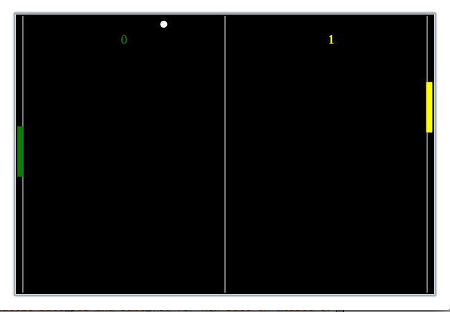

This is a practice project the class I was taking did, it uses a gui module called simplegui, which works inside the web app that was set up for the class, Codeskulptor. I'm looking to translate the simplegui methods into tkinter ones, so that it can be played on a desktop. The interface only works inside the codeskulptur app, though the logic would be the same. To play it, click the link below and press the 'run' button in the upper left. Works best in Chrome. Probably wouldn't work on mobile. Play Pong!
If the above button gives an error, "unable to load "#user*", then copy/paste the below code into the editing area. Or open the link with Chrome. Adblock plus and httpseverywhere addons for Firefox cause the error.
Up and down control the right paddle, A and Z control the left. I added some extra functionality for fun, the paddles get smaller every time you hit the ball.
The full implementation:
# Implementation of classic arcade game Pong
import simplegui
import random
# initialize globals - pos and vel encode vertical info for paddles
WIDTH = 600
HEIGHT = 400
BALL_RADIUS = 4
PAD_WIDTH = 8
PAD_HEIGHT = 80
HALF_PAD_WIDTH = PAD_WIDTH / 2
HALF_PAD_HEIGHT = PAD_HEIGHT / 2
LEFT = False
RIGHT = True
# initialize ball_pos and ball_vel for new ball in middle of table
ball_pos = [ WIDTH/2, HEIGHT/2 ]
ball_vel = [ 0, 0 ]
paddle1_pos = [ 0, (HEIGHT/2-PAD_HEIGHT/2) ]
paddle2_pos = [ (WIDTH - 1), (HEIGHT/2-PAD_HEIGHT/2) ]
paddle1_vel = [ 0, 0 ]
paddle2_vel = [ 0, 0 ]
score1 = 0
score2 = 0
# if direction is RIGHT, the ball's velocity is upper right, else upper left
def spawn_ball(direction):
global ball_pos, ball_vel, PAD_HEIGHT, paddle1_pos, paddle2_pos
# these are vectors stored as lists
PAD_HEIGHT = 80
paddle1_pos = [ 0, (HEIGHT/2-PAD_HEIGHT/2) ]
paddle2_pos = [ (WIDTH - 1), (HEIGHT/2-PAD_HEIGHT/2) ]
ball_pos = [ WIDTH/2, HEIGHT/2 ]
#ball_vel = [ 0, 0 ]
ball_vel = [(random.randrange(60, 180) // 60), (random.randrange(60, 180) // 60)]
if not direction:
ball_vel[0] = -ball_vel[0]
ball_vel[1] = -ball_vel[1]
#print ball_vel
# define event handlers
def new_game():
global paddle1_pos, paddle2_pos, paddle1_vel, paddle2_vel # these are numbers
global score1, score2 # these are ints
spawn_ball(RIGHT)
def draw(canvas):
global score1, score2, paddle1_pos, paddle2_pos, ball_pos, ball_vel, paddle1_vel, PAD_HEIGHT
# draw mid line and gutters
canvas.draw_line([WIDTH / 2, 0],[WIDTH / 2, HEIGHT], 1, "White")
canvas.draw_line([PAD_WIDTH, 0],[PAD_WIDTH, HEIGHT], 1, "White")
canvas.draw_line([WIDTH - PAD_WIDTH, 0],[WIDTH - PAD_WIDTH, HEIGHT], 1, "White")
# update ball
if (ball_pos[1] + ball_vel[1] <= BALL_RADIUS) or (ball_pos[1] + ball_vel[1] >= HEIGHT - BALL_RADIUS - 1):
ball_vel[1] = -ball_vel[1] #bounce off top and bottom
if ball_pos[0] + ball_vel[0] <= BALL_RADIUS:
if (paddle1_pos[1] - PAD_HEIGHT) <= ball_pos[1] <= (paddle1_pos[1] + PAD_HEIGHT):
ball_vel[0] = -ball_vel[0]
#uncomment to allow ball speed up when reflected off paddle
ball_vel[0] = ball_vel[0] * float(1.25)
ball_vel[1] = ball_vel[1] * float(1.25)
if PAD_HEIGHT > BALL_RADIUS:
PAD_HEIGHT = PAD_HEIGHT - (PAD_HEIGHT * float(.1))
else:
score2 += 1
spawn_ball(RIGHT)
elif ball_pos[0] + ball_vel[0] >= WIDTH - BALL_RADIUS - 1:
if (paddle2_pos[1] - PAD_HEIGHT) <= ball_pos[1] <= (paddle2_pos[1] + PAD_HEIGHT):
ball_vel[0] = -ball_vel[0]
#uncomment to allow ball speed up when reflected off paddle
ball_vel[0] = ball_vel[0] * float(1.25)
ball_vel[1] = ball_vel[1] * float(1.25)
if PAD_HEIGHT > BALL_RADIUS:
PAD_HEIGHT = PAD_HEIGHT - (PAD_HEIGHT * float(.1))
else:
score1 += 1
spawn_ball(LEFT)
ball_pos[0] += ball_vel[0]#updates x coordinate
ball_pos[1] += ball_vel[1]#updates y coordinate
# draw ball
canvas.draw_circle(ball_pos, BALL_RADIUS, 2, "White", "White")
# update paddle's vertical position, keep paddle on the screen
if paddle1_pos[1] + paddle1_vel[1] <= PAD_HEIGHT - PAD_HEIGHT:
paddle1_pos = paddle1_pos #dont move past top
elif paddle1_pos[1] + paddle1_vel[1] >= HEIGHT - PAD_HEIGHT - 1:
paddle1_pos = paddle1_pos #dont move past bottom
else: #move as normal
paddle1_pos[0] += paddle1_vel[0]
paddle1_pos[1] += paddle1_vel[1]
if paddle2_pos[1] + paddle2_vel[1] <= PAD_HEIGHT - PAD_HEIGHT:
paddle2_pos = paddle2_pos
elif paddle2_pos[1] + paddle2_vel[1] >= HEIGHT - PAD_HEIGHT - 1:
paddle2_pos = paddle2_pos
else:
paddle2_pos[0] += paddle2_vel[0]
paddle2_pos[1] += paddle2_vel[1]
# draw paddles
#leftpaddle
canvas.draw_polygon( [(paddle1_pos[0], paddle1_pos[1]),
(PAD_WIDTH, paddle1_pos[1]),
(PAD_WIDTH, paddle1_pos[1] + PAD_HEIGHT),
(paddle1_pos[0], paddle1_pos[1]+PAD_HEIGHT)],
1, 'Green', 'Green')
#right paddle
canvas.draw_polygon( [ ( paddle2_pos[0], paddle2_pos[1] ),
( (paddle2_pos[0] - PAD_WIDTH), paddle2_pos[1] ),
((paddle2_pos[0] - PAD_WIDTH), paddle2_pos[1] + PAD_HEIGHT),
(paddle2_pos[0], (paddle2_pos[1]+PAD_HEIGHT))],
1, 'Yellow', 'Yellow')
# draw scores
canvas.draw_text( str(score1), [(0 + float(0.25 * WIDTH)), (0 + float(0.1 * HEIGHT))], 18, 'Green')
canvas.draw_text( str(score2), [((WIDTH - 1) - float(0.25 * WIDTH)), (0 + float(0.1 * HEIGHT))], 18, 'Yellow')
def keydown(key):
global paddle1_vel, paddle2_vel
acc = 4
if key == simplegui.KEY_MAP["A"]:
paddle1_vel[1] -= acc
elif key == simplegui.KEY_MAP["Z"]:
paddle1_vel[1] += acc
elif key == simplegui.KEY_MAP['up']:
paddle2_vel[1] -= acc
elif key == simplegui.KEY_MAP['down']:
paddle2_vel[1] += acc
def keyup(key):
global paddle1_vel, paddle2_vel
acc = 4
if key == simplegui.KEY_MAP["A"]:
paddle1_vel[1] += acc
elif key == simplegui.KEY_MAP["Z"]:
paddle1_vel[1] -= acc
elif key == simplegui.KEY_MAP['up']:
paddle2_vel[1] += acc
elif key == simplegui.KEY_MAP['down']:
paddle2_vel[1] -= acc
# create frame
frame = simplegui.create_frame("Pong", WIDTH, HEIGHT)
frame.set_draw_handler(draw)
frame.set_keydown_handler(keydown)
frame.set_keyup_handler(keyup)
# start frame
new_game()
frame.start()